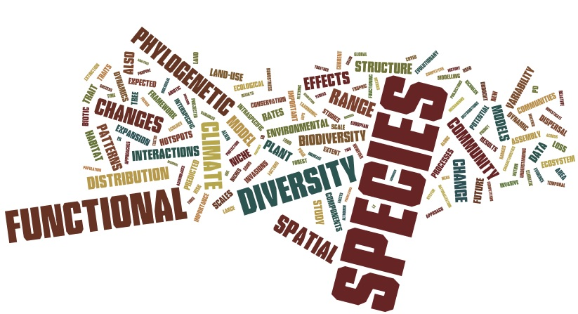
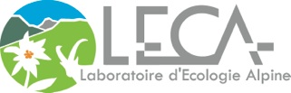
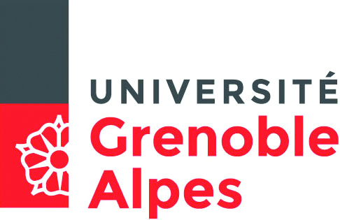

I am senior research scientist (Directeur de Recherche de classe exceptionnelle, DRCE) at CNRS (National Center for Scientific Research) based in Grenoble. I am trained as both an ecologist and a biostatistician. I have several research areas including investigating the spatial and temporal dynamics of species and communities, detecting and attributing the impacts of environmental change on biodiversity (species, functional and phylogenetic), measuring the influence of environment and habitat quality on intra-specific plant functional traits, understanding what makes a good invader and how to predict its potential distribution, and finally how and why species co-exist together. I am now also deeply interested in spatial network analyses — namely how ecological networks vary in space and time and why, and how they influence ecosystem functioning.
To work on these issues, I conduct observational and experimental studies, simulation experiments, statistical analyses of empirical data and mechanistic modeling.
My closest collaborators at the LECA are Sara Si-Moussi (CPJ CNRS), Tamara Münkemüller, Sébastien Lavergne, Laure Gallien, Matthias Grenié, Camille Desjonquères and Sandra Lavorel, with whom I am co-supervising PhD students and postdocs.

Laboratoire d'Ecologie Alpine (LECA)
Université Grenoble Alpes, CS 40700
38058 Grenoble cedex 9, France
Email: wilfried.thuiller_at_univ-grenoble-alpes.fr

